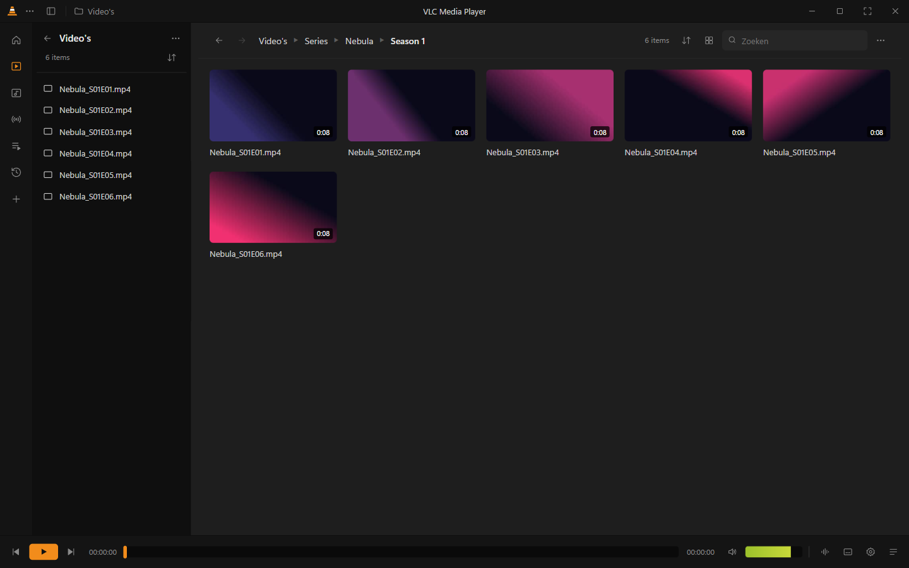
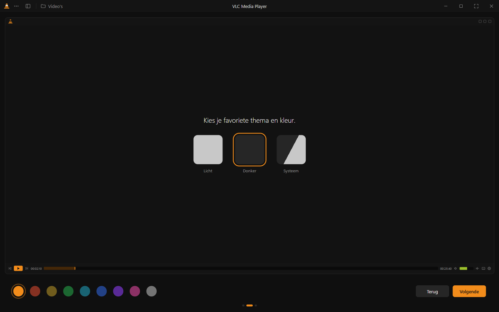
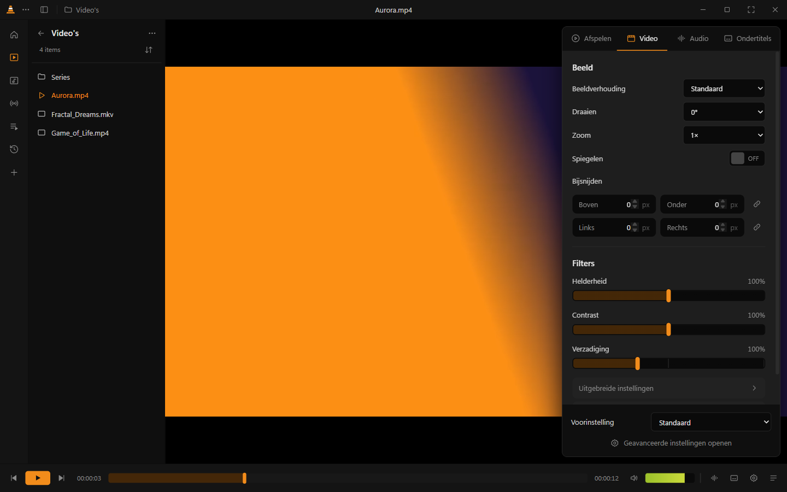
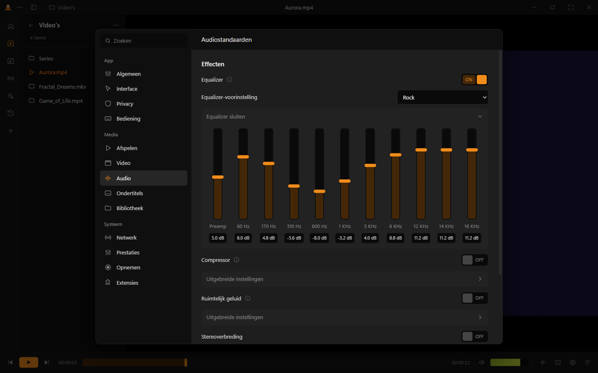
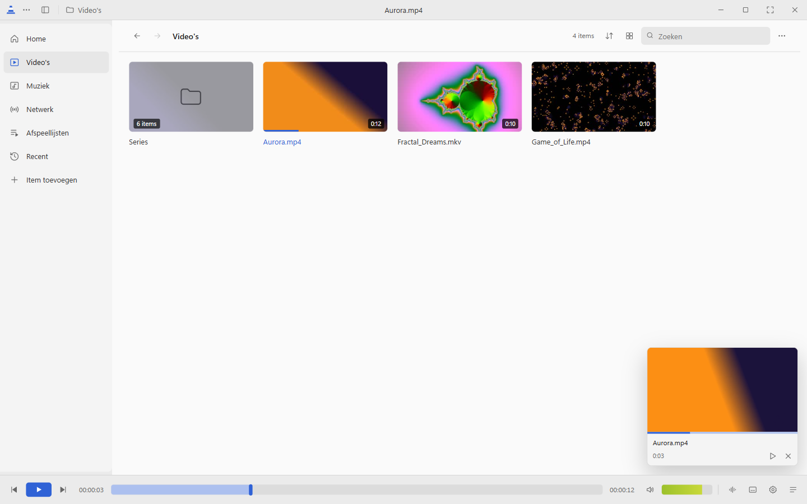

The number 1 best build with the design of Juxtopposed. Version 3 is native (Qt) and plays with VLC's own engine (libVLC), with a library, playlists, subtitles, an equalizer and accent colors.
Downloadlatest versionOther system? All downloads · All versions

Pick your operating system. All files come from the latest release on GitHub. Available in English, Dutch, German, French, Spanish, Italian, Portuguese and Polish.
If the SmartScreen dialog appears, click More info → Run anyway.
First launch: right-click the app → Open. The app is not signed by Apple.
Chrome OS: turn on the Linux development environment and open the .deb file.
Not available: iOS, Apple TV, Android and Windows Phone (version 3 is a desktop app made with Qt). FreeBSD/OpenBSD users can run it from source.
Plays through libVLC, the engine of VLC media player itself: MP4, MKV, AVI, MOV, WMV, FLAC, AC3/DTS and more, DVD menus, image subtitles, surround and passthrough to your receiver.
Browse your media folders with breadcrumbs, see what you've already watched, and continue where you left off.
Embedded and external .srt/.ass/.vtt subtitles, with delay, speed, font and color settings.
10-band equalizer with presets, compressor, reverb, stereo widener and volume boost.
Brightness, contrast, gamma, sharpen, film grain, sepia, crop, rotate and mirror.
Light, dark or system theme with 9 accent colors, in 8 languages. Plus playlists, network streams, recording and snapshots.




The entire design of this app (the library, the player, the onboarding and the settings) comes from Juxtopposed, from the video "I Redesigned VLC After 25 Years". The design was shared publicly as a Figma community file. This app is a working version of that design.
Watch the video to see how the design came together. 🎨